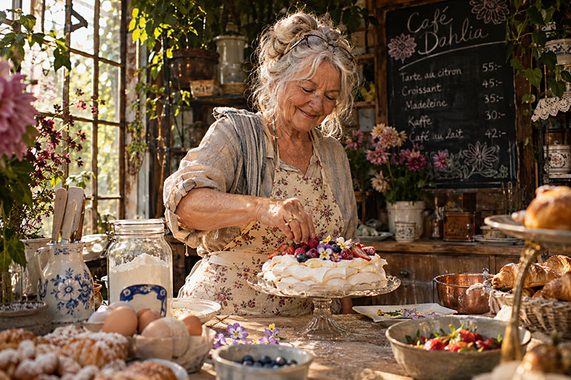

Café Dahlia är ett litet café som ligger på Världens Ände i Arkösund utanför Norrköping. Platsen är en gammal handelsträdgård som vi har gett nytt liv och energi. Vi erbjuder en mysig atmosfär, färska blommor, mat och fika, allt är såklart hembakat av Siv. Vårt mål är att skapa en plats där människor kan samlas, koppla av och samla energi.
Siv är passionerad om kaffe och bakverk och tar mycket inspiration från det franska köket. Vi strävar efter att använda de bästa ingredienserna för att skapa en unik smakupplevelse, och samarbetar med flera lokala leverantörer.
Café Dahlia byggdes från grunden av vännerna Siv och Maya. De hade en dröm och gjorde den till verklighet. Då de inte hade en stor budget att utgå i från är möbler och porslin, fynd från olika second hand butiker eller skänkta av varma medmänniskor.
På gården finns också möjlighet till självplockning av våra vackra blommor. Vill eller orkar du inte plocka själv, finns färdiga buketter att köpa i cafét.
Vi ser fram emot att välkomna dig till vårt paradis på jorden, vårt safe haven. Oavsett om du vill ta en paus från vardagen, träffa vänner eller bara njuta av lugnet, blommorna och något gudomligt gott att äta, är du alltid välkommen till oss på Café Dahlia.
Siv är en passionerad äldre dam i sina bästa år som alltid älskat att baka och skapa unika smaker och bakverk. Kärleken till det franska köket fick hon redan som ung men hon vågade aldrig satsa på det för än Maya kom in i hennes liv. Siv är också en kreativ själ som älskar att experimentera med nya recept och tekniker. Hon är alltid på jakt efter de bästa ingredienserna för att skapa en unik smakupplevelse för våra gäster, och allt Siv gör är garanterat gjort med kärlek.
Maya är numera en sprudlande och levnadsglad tjej som en kall vinternatt sökte tröst och vägledning i Världens Ände. Lite visste hon då att hon skulle hitta både och, men även sig själv och en ny familj. Maya är en kreativ själ som älskar att se det fina i det lilla och lever i tron på att det aldrig är för sent att hitta sig själv eller att börja om.
Mayas motto: "Livet är för kort för att inte leva det med kärlek och passion, och det kan aldrig bli för mycket färg" Något som verkligen syns i hennes blommor och buketter.
Två olika själar som kom in i varandras liv när de behövde det som mest. Två udda människor som hittade sin passion och sin bästa vän samtidigt.
